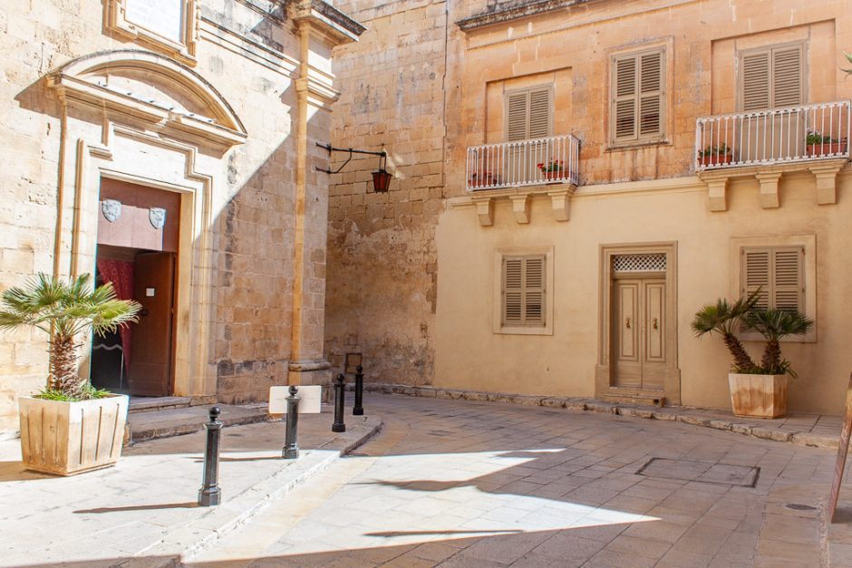
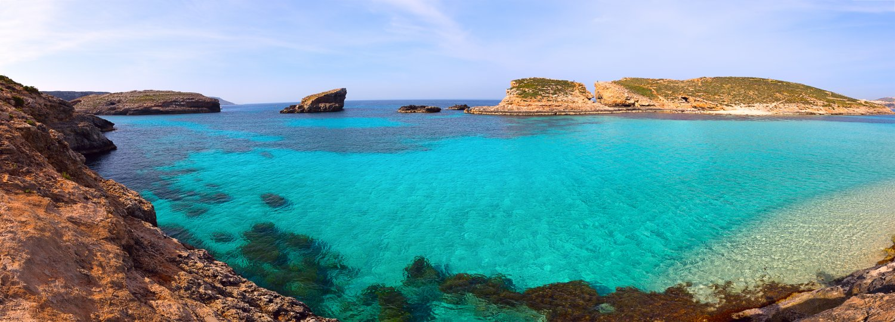
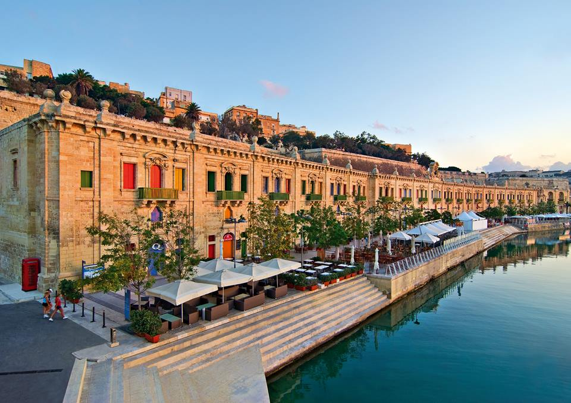
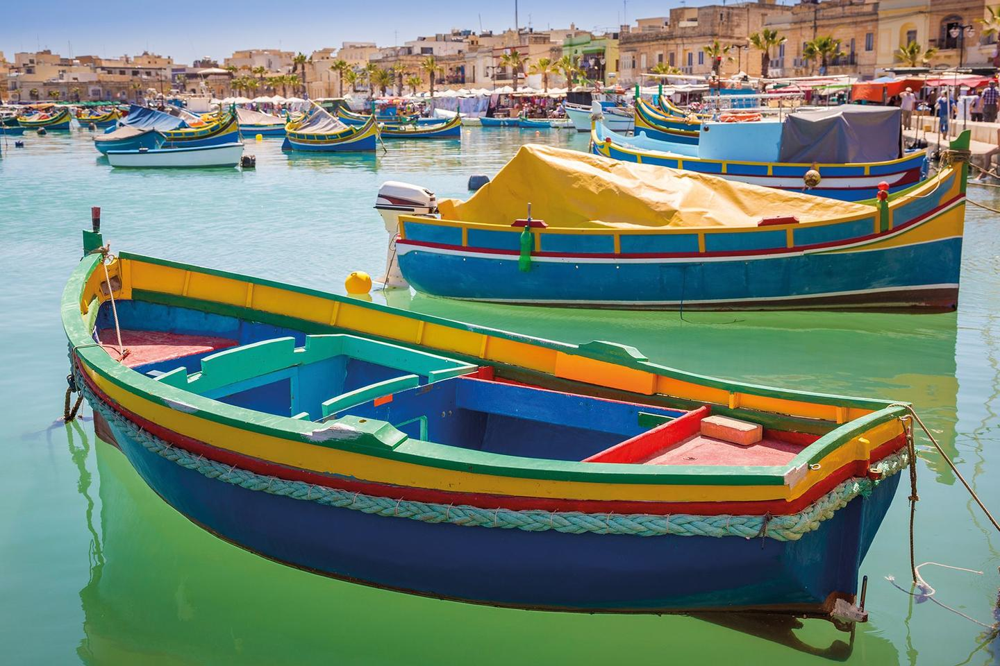

L'ancienne capitale - Mdina
Mdina, petite ville fortifiée du centre de Malte et ancienne capitale, se visite facilement à pied. Peuplée d’environ 300 habitants, on la surnomme The Silent City. On la surnomme également Citta Notabile (la ville noble) car les familles de la noblesse maltaise y ont élu domicile au 12ème siècle.
L’histoire de Mdina est très riche et remonte à plus de 4000 ans. A l’origine, Mdina et la ville de Rabat n’étaient qu’une seule et même ville dont les origines remontent aux Phéniciens. Au 9ème siècle, les Arabes fortifièrent Mdina, la séparant de Rabat. Son nom vient d’ailleurs du mot arabe medina qui désigne la partie ancienne d’une ville.

L'ile de Gozo et Comino
Gozo (en maltais Għawdex) est l'île secondaire de l'archipel maltais. Rabat, la ville la plus importante, siège du ministre de Gozo, se trouve au centre de l'île.
Son relief est une succession de collines escarpées, d’arêtes rocheuses et de vallées très encaissées. La campagne de Gozo, verte et fleurie au printemps est une mosaïque de champs cultivés en terrasse, des routes sinueuses, étroites entourées de hauts murets de pierre qui rejoignent les fermes traditionnelles, les villages dispersés et autres tours perchées à 120 mètres d’altitude.
Si vous avez choisi de faire une balade en bateau, n'hésitez pas à vous arretez sur l'ile de Comino et de profitez de ses belles plages à la mer bleue turquoise

La Valette et ses environs

La Valette est le joyau baroque de la Méditerranée ! Une balade à pied dans la capitale de Malte c’est la découverte d’un « concentré » d’architecture et de monuments jamais égalés au monde. Classée patrimoine de l’Unesco, ses palais, églises et musées renferment des trésors. Visitez aussi ses jardins et ses quais : vous serez récompensé par des panoramas extraordinaires.
Après une petite balade en ferry, vous pouvez accéder à Sliema, une grande ville située en face de la capitale. Elle possède de nombreux magasins et est un lieu prisé par les touristes.
A quelques minutes de Sliema, se trouve la ville balnéaire de St-Julian, qui regorge d'une multitude d'endroits où sortir la nuit.
Le sud de l'ile - Marsaxlokk et Hagar Qim
La Baie de Marsaxlokk est le second plus important port de Malte. C'est le lieu idéal pour admirer les traditionnels bateaux de pêcheurs colorés maltais, les Luzzu, qui ont tous le mythique œil peint sur leur proue. Ce village est le principal port de pêche de l'archipel. Son marché au poisson du dimanche est un aperçu fascinant de la vie sociale et de l'industrie traditionnelle maltaise.
Un peu plus au sud ouest, près de la ville de Qrendi, vous pouvez trouver les temples mégalithiques de Hagar Qim et Mnajdra. Il est aussi possible de visiter en bateau la Blue Grotto.
